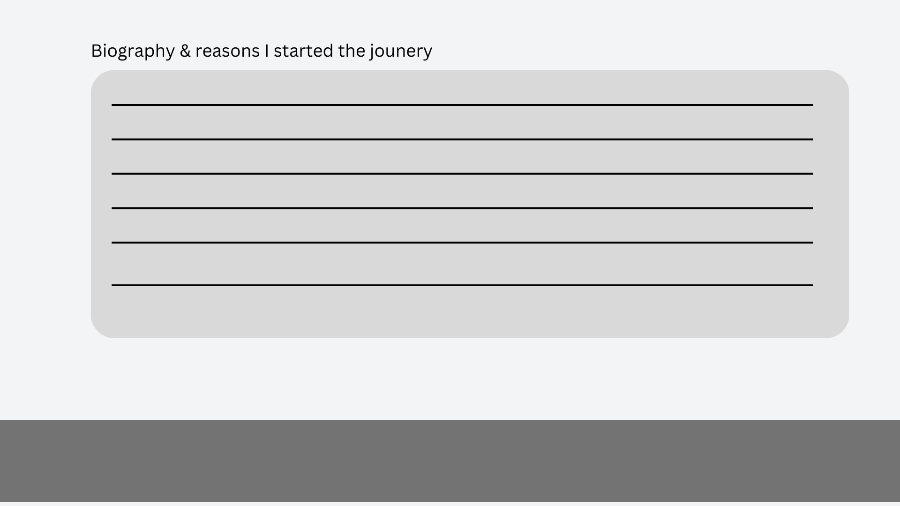

Goal: Creating a commercial grade website that would showcase my interest in plant-based and vegan lifestyle.
Main Web development focusing on JavaScript, UI/UX design, and data visualizations using D3.js.
The process began with defining the core structure and design of the website, focusing on a vegan and plant-based lifestyle theme. I aimed for a visually appealing and functional design that reflects the site's purpose of educating and sharing plant-based recipes, blog posts, and data. The primary color palette consisted of green and orange to align with the theme of sustainability and health.
Development process:
Initially, the website theme was broad, but we decided to focus exclusively on vegan/plant-based blog posts & data for simplicity and alignment with my interests.
Challenges:
After adding blog posts, running out of time to add recipes
Understanding how to implement complex data visualizations with D3.js.
Data Visualizations: Initial Decisions and API Integration Attempts As part of the website, I aimed to include at least two data visualizations: a bar/line graph and a map or bubble chart. One of the key goals was to show vegan and vegetarian trends globally.
I initially signed up for the Spoonacular API, hoping to pull data on plant-based products directly. However, integrating the API proved difficult:
The Spoonacular API didn’t have straightforward data related to plant-based product trends.
I encountered a 405 error on my GitHub Pages site when attempting to use the API, due to request restrictions on server communication.
Challenges:
Learning how to work with APIs and handling CORS (Cross-Origin Resource Sharing) errors.
Finding accurate, ready-made data on plant-based products for my specific use case.
Pivot to Manual Data Entry for Visualizations Given the complexity of using an external API, I pivoted to manually entering data for plant-based product trends. This decision allowed me to fully control the data being visualized, ensuring it matched the exact topic I wanted to highlight.
I used two datasets:
1. Yearly global sales growth of plant-based products from 2020 to 2026.
2.Current sales and forecasts for specific categories (e.g., plant-based meat, dairy alternatives, etc.).
These datasets were manually entered into JSON files, which allowed me to solve the API issues entirely as I was running out of more time trying to solve the errors I encountered.There are also not a lot of API's for this specific data so I struggled to find them. The next solution was to change the theme, but I am too passionate about the theme and I had already done my blog posts and profile.
I initially signed up for the Spoonacular API, hoping to pull data on plant-based products directly. However, integrating the API proved difficult:
The layout included two main graphs: one to show the yearly sales growth and another to compare product sales and forecasts.
I used D3.js to create the graphs, which required understanding how to manipulate data, create scales, axes, and bars, and ensure proper responsiveness.
Challenges:
Learning how to use D3.js to render the graphs.
Managing alignment issues with the axes (e.g., Y-axis values not aligning properly with the grid).
Ensuring the axes had proper titles and labels for clarity.
Refining the Visuals Once the basic visualizations were in place, I refined them further:
Added titles for the X and Y axes to make the graphs more understandable.
Fixed alignment issues where the Y-axis values were sitting too close to the zero line.
Made design adjustments for a cleaner, more professional look.
At this stage, I decided to add the colour schemes, settling on green and orange hues to complement the plant-based theme of the website.
Challenges Throughout the Process Throughout the project, several challenges stood out:
API integration difficulties: Using an external API like Spoonacular for specific plant-based product data was much more complicated than expected.
Data visualization learning curve: D3.js, though powerful, required an understanding of how to structure data and bind it to visual elements.
Design consistency: Maintaining a consistent and appealing design while working with various web technologies was a balancing act.
In the final phase, I ensured that both visualizations were fully functional and polished.
Wireframes:



Key Design Elements:
Main sections: Included a data page with interactive data visualizations, a blog page, and a profile page introducing myself.
Profile section: The profile page features a large cartoon image of myself with a speech bubble saying, “Hi, I’m Kaycee Chantelle & I am passionate about living a plant-based lifestyle. Here is why…” This section was designed to make the website personal and engaging.
Profile Page with Typewriter Animation
The next step was adding a typewriter animation to the speech bubble on the profile page. This effect was achieved using D3.js to create a dynamic experience. The animation provided an interactive and fun introduction to the page.
Profile section: The profile page features a large cartoon image of myself with a speech bubble saying, “Hi, I’m Kaycee Chantelle & I am passionate about living a plant-based lifestyle. Here is why…” This section was designed to make the website personal and engaging.
More info about data visualisation complications: Initially, I planned to use the Spoonacular API to pull data for the plant-based product visualization. However, after exploring the API, I encountered several challenges, such as complex API integration and the inconsistency of the available data. Due to these complications, I decided to manually create a JSON file for the data, sourcing statistics on plant-based lifestyles from trusted websites.
API limitations: The Spoonacular API did not provide structured, reliable, or real-time plant-based data that I needed. As a result, I switched to manually creating a .json file to store the data from trusted sources. This approach gave me full control over the data and its structure, eliminating the need to rely on third-party APIs.
Sources of data for the visualizations:
Vegetarianism by country
World population Review - Veganism by country
World population Review - Vegetarianism by country
Data Visualization (D3.js):
To display the data, I used D3.js to create interactive visualizations.
Line Graph Visualization: The line graph shows trends over time in the growth of vegans and vegetarians worldwide. Includes hover interactions.
Bar Graph Visualization: The bar graph compares the number of vegans and vegetarians by continent. D3.js was used to create the graph, with hover interactions that display additional data for each bar.
References:
Throughout the development process, I relied on various tutorials and documentation to enhance my understanding of D3.js, data visualization, and web design.